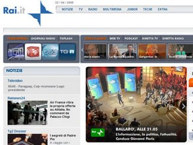
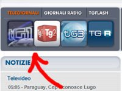

What do Italian families do at 8pm every day? They dine together and watch the evening news (Telegiornale). RAI is the Italian public TV network and encompasses three main channels: RAI 1, RAI 2 and RAI3. While all three channels collaborate on reporting national and local news, they have been historically characterized by different political views of their respective newsroom management. Nevertheless, RAI has stepped up considerably their commitment to Internet programming and they have been publishing online a wide variety of shows including my favorite Telegiornale, called TG1. Here is how you can watch it too. Go to RAI Web site and click on the TG1 icon indicated by the arrow.
The latest TG1 video edition will show up in a pop up window and stream for 30 mins (you may need to enable pop ups for this site). Don't forget to browse around for a wealth of other TV and radio shows including documentaries and cartoons for the youngest. Yes, everything is in Italian of course...